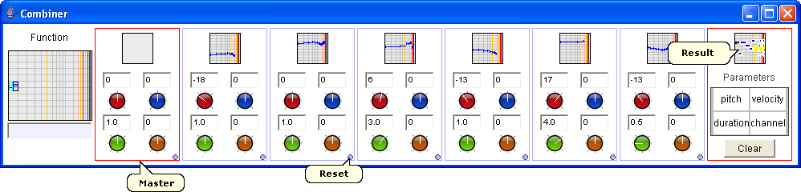

The combiner allows to apply a binary function recursively on the musical objects in the different boxes. The function is first applied on the 5th and 6th objects, then the function is applied on this result and the 4th object, then the function is applied on this new result and the 3th object and so on.
For each step, pitch, velocity, duration and channel can be adjusted: you can set them by vertically moving the mouse on the rotative buttons, and precise them by pressing Ctrl. Moreover, a reset button is available. The left master box allows to operate on all steps at the same time: a musical objet dropped in it will be copied in the 8 boxes, pitch, velocity, duration and channel can be adjusted globally.
The result is available in the right box.